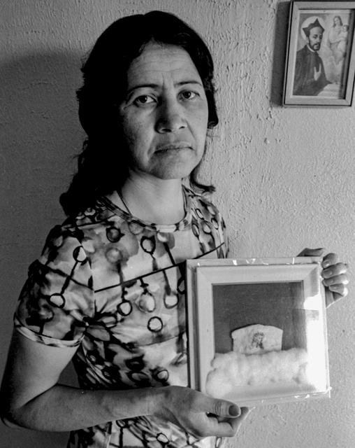
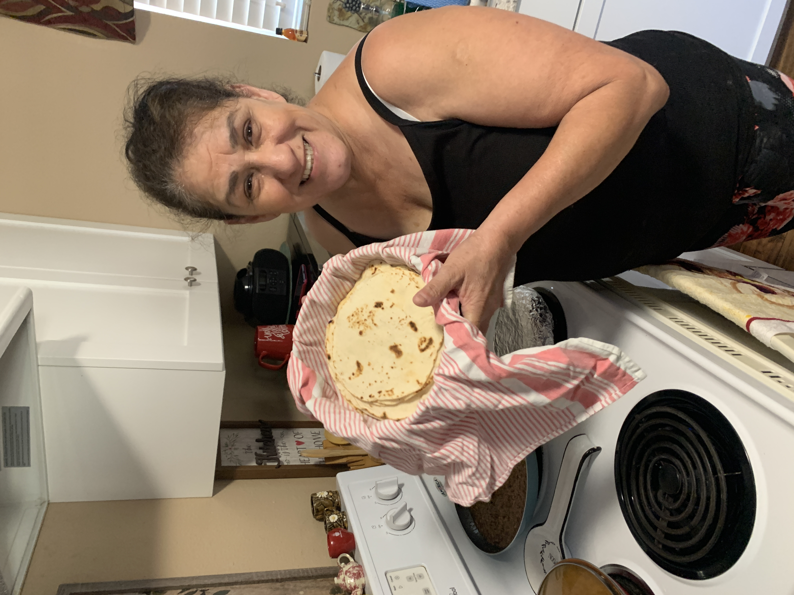
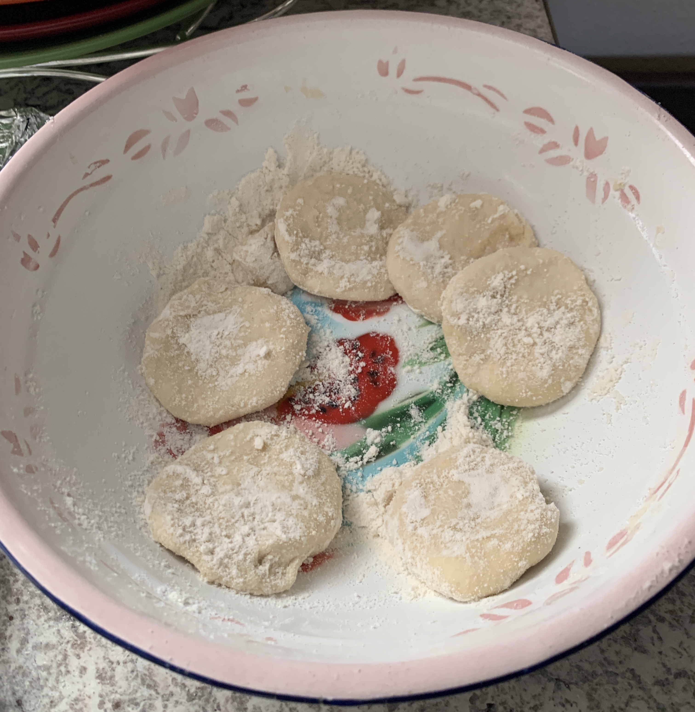
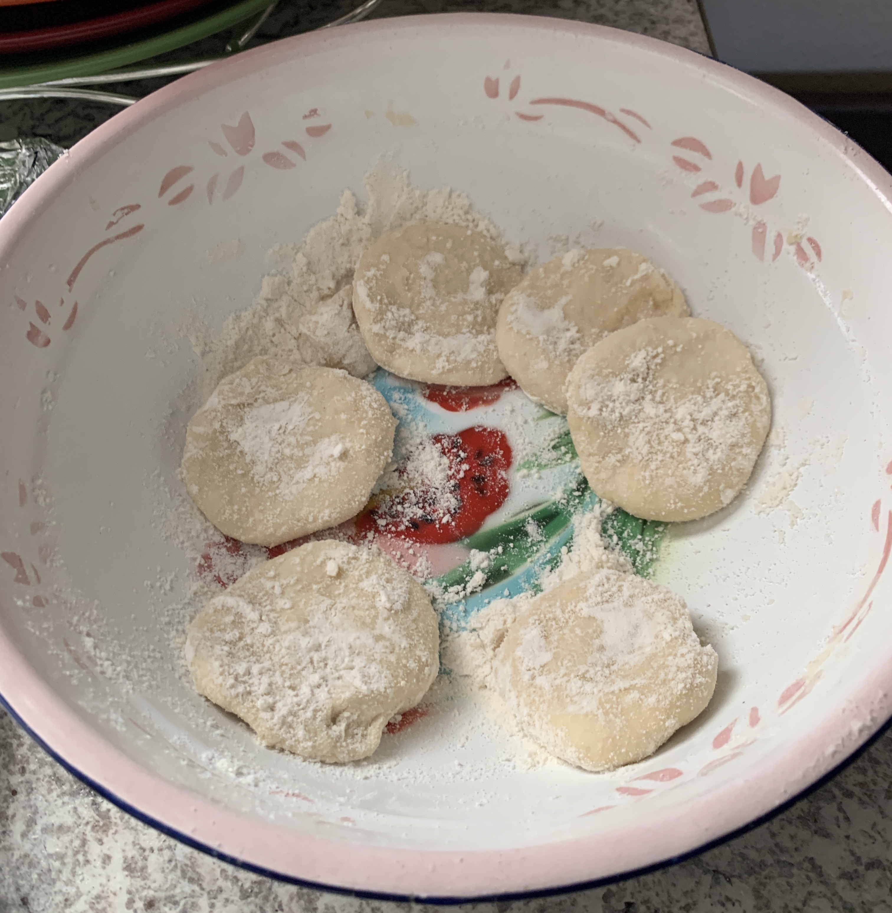
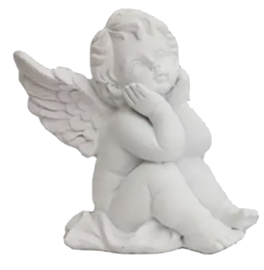

 

People have been found to perceive images with spiritual or religious themes or import, sometimes called iconoplasms or simulacra, in the shapes of natural phenomena. The images perceived, whether iconic or aniconic, may be the faces of religious notables or the manifestation of spiritual symbols in the natural, organic media or phenomena of the natural world. The occurrence or event of perception may be transient or fleeting or may be more enduring and monumental. The phenomenon appears to approach a cultural universal and may often accompany nature worship, animism, and fetishism, along with more formal or organized belief systems.
Within Christian traditions, many instances reported involve images of Jesus or other Christian figures seen in food; in the Muslim world, structures in food and other natural objects may be perceived as religious text in Arabic script, particularly the word Allah or verses from the Qur'an. Many religious believers view them as real manifestations of miraculous origin; a skeptical view is that such perceptions are examples of pareidolia.
The original phenomena of this type were acheropites: images of major Christian icons such as Jesus and the Virgin Mary that were believed to have been created by supernatural means. The word acheropite comes from the Greek ἀχειροποίητος, meaning "not created by human hands", and the term was first applied to the Turin Shroud and the Veil of Veronica. Later, the term came to apply more generally to simulacra of a religious or spiritual nature occurring in natural phenomena, particularly those seen by believers as being of miraculous origin.
